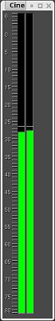

| [ << ] | [ >> ] | [Top] | [Contents] | [Index] | [ ? ] |
Bolumenaren leihoa bistara daiteke Leihoa menutik. Bolumena leihoak irteerako audioaren bolumena bistaratzen du nahasketa guztiak egindakoan.

Soinu bolumenaren leihoa
Soinuaren bolumena leku askotan agerten da. Ikustailea eta konposaketa-leihoko bolumenaren txandakatzailearekin bistara daiteke. Atributuen panelean ere agerten da pista zabalduta dagoenean (irakurri See section Atributu-panela atala). Grabazioaren monitorean ere agerten da, audioa grabatzean ari denean.
Bolumenaren, konposaketaren eta ikustailearen leihoetan agertzen diren bolumenak amaierako irteeraren bolumenari dagozkie (soinu-txartelaren barrutian moztu baino lehenago). Grabazioaren monitoreko bolumenak soinu-txarteletik jasotzen diren sarrerako balioak dira. Atributuen paneleko bolumenak pista bakoitzaren bolumenak dira (efektu guztiak prozesatu ondoren eta irteerako nahasketa landu aurretik).
Gehienetan, soinuaren bolumenak marka numerikoak dituzte, dB unitateetan, baina atributuen panelean ez dago nahikoa lekurik horretarako.
Soinuaren bolumena koloredun kodearekinagertzen da baita ere, bolumenaren maila zehazteko adierazten duen osagarria. Nahiz eta marka numerikorik ez eduki, soinuaren mailaren koloreak hainbat barruti eta gainkargen artean desberdintzen lagunduko dizu. Marka numerikoak dituen bolumen batean, begiratu soinuaren mailak zein koloreri dagokien jakiteko. Gero, zabaldutako audioko pistaren bolumenean erabili koloredun kodeak gainkarga dagoen ikusteko.
Argi ibili soinuaren bolumenak 0 dB ez gainditzeko Cinelerra-n. Maila honetara iristean pista gainkargatzen ari dela ikus dezakezu, horretaz gain zenbat informazio galduko den adierazten dizu. 3 dB baino gutxiagoko gainkargak onargarriak izan ohi dira. Cinelerra-n, gainkarga zenbaki positiboekin adierazten den arren, gainkarga 0 dB mailan moztuko da soinu-txartelera edo fitxategira bidaltzean.
Soinuaren bolumenaren barruti ikusgaia Ezarpenak -> Hobespenak -> Interfazea menuan konfigura daiteke. See section Interfazea.
| [ << ] | [ >> ] | [Top] | [Contents] | [Index] | [ ? ] |
This document was generated by Raffaella Traniello on December, 31 2007 using texi2html 1.76.